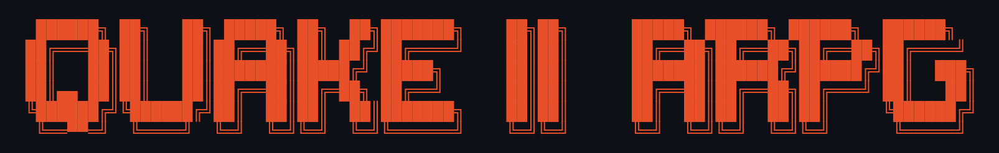
Kill. Loot. Level up. Repeat.
A free looter-boomer-shooter mod for the Quake II rerelease. Every gun is rolled with a rarity, a maker, parts and sometimes an element. Level up, pick a skill tree, shop at vendors, chase challenges and replay the campaign in New Game+.
Monsters drop guns rolled from a maker, parts and stats. Walk over one to see its card and compare it with yours.
Fire burns, shock staggers and cuts power armor, corrosive melts and makes targets take more damage, cryo slows then freezes, and explosive sets off blasts.
Gunner, Juggernaut or Elementalist, each with its own action skill: a turret, a ground slam or an overcharge burst.
Gear that adds bonus ranks to up to three skills of your tree, even past their max.
A fifth gear piece with one passive effect for any tree: element boosts, cash and luck, ammo regen, life steal or grenade damage.
Rechargeable shields with their own rolls. Some burst into an elemental nova when they break, or spike monsters that hit you in melee.
Frag, Cluster, Sticky, Vortex, Leech, Hopper and Airburst. Legendary mods get a twist.
Sell loot, buy guns, ammo and permanent upgrades, level guns up at the workshop, and buy a Second Chance at life.
Every map hides white chests and sometimes a red one packed with better gear and cash.
Two vendor missions per map: hunt a monster kind, Alphas, headshots or a kill spree for XP, cash and gear.
A stash that keeps any item across maps and New Game+, and a filter that hides low-rarity drops.
Elite monsters with better drops. In New Game+ they roll random traits, and the rare Omegas guarantee a Legendary.
Kill goals that pay XP and cash. In New Game+ a fourth tier drops a Mythic reward and a permanent badge.
Finish the campaign to start again with tougher monsters, Mythic gear, a level cap of 60 and a modifier on every map.
The level 60 endgame: tiered runs through Quake 64 maps, a guardian at the end, and a loot burst for every tier you clear.
Face the Hollow King, a three-phase raid boss with element shields, shockwaves and three raid-only uniques.
A horde mode from level 15: fifteen waves of rising danger, cash every wave and gear every third.
Melee strikes on Z, semi-auto pistols, and weapon proficiency that grows with every kill.
Single-player and co-op, including split-screen. Each player gets their own drops and cash, and you can hand a teammate your gun.
A green radar that maps every level as you explore it: walls, ledges, lava, items and loot by rarity. Full-screen map on M.
In New Game+ the Strogg's own weapons turn up: the Ripper's bouncing discs and the Tracker's homing shots.
Pick a skin and an aura. The rarer ones unlock with levels, challenge tiers, New Game+ and the raid.
Your binds stick. Rebind any key in the game's controls menu or the console and it stays that way: the mod sets its default keys once, the first time you play, instead of every launch. Every screen, tip and tutorial note shows the key you bound, not the default. Type q2rpg_resetbinds in the console to put the defaults back.
Tougher Arachnids and Guardians, from Paril's PSX update. The Arachnid aims ahead of you, chains its melee and loses its temper after a few misses with a rapid rail volley; on Nightmare it calls in Stalkers. The Guardian leads its shots, launches homing rockets you can shoot down, blind-fires where it last saw you and raises a power shield when you carry a Quad. Mappers get trigger_safe_fall and a sleeping Guardian.
Plus fixes: on-screen messages fit their dark box with the classic font and the alternate typeface, worse stats show in red with the classic font, and monster_loot_random drops its guaranteed gun where the monster died.
Every menu has been rebuilt. The plain text screens are gone: the vendor, skills, loadout, stash, missions, challenges and looks are now drawn panels with tabs, gun icons, rarity colors and prices that turn green when you can afford them. The HUD gets a real XP bar and an action skill meter that fills as it cools down. Keys stay the same. New players can type tutorial in the console for a short map that teaches everything, and mappers get monster_loot_random for random monsters with optional guaranteed loot.
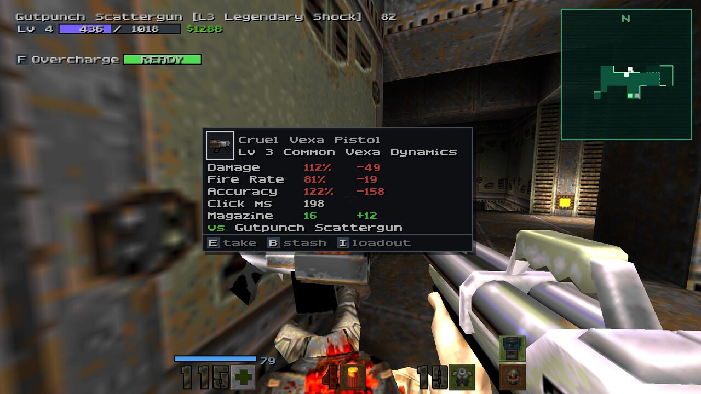
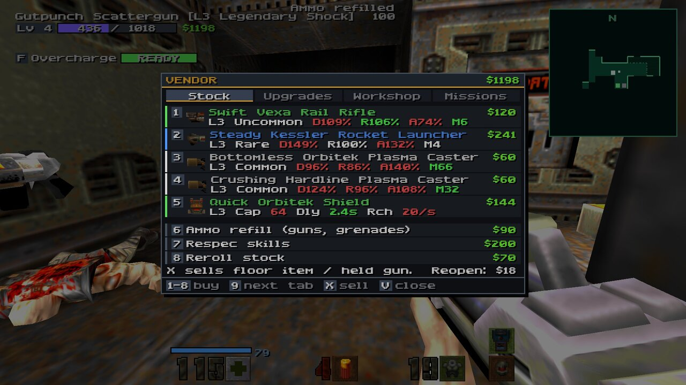
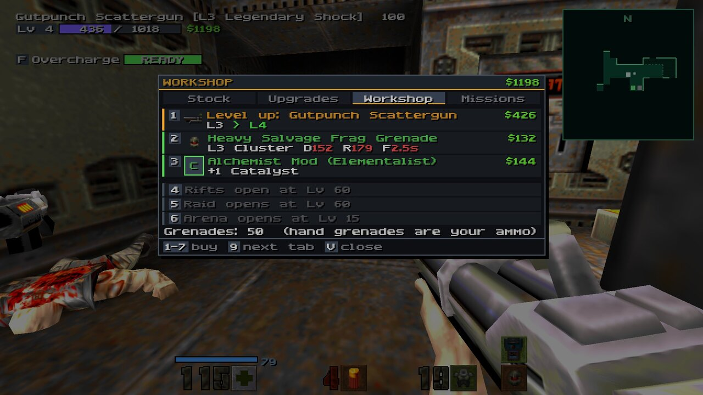
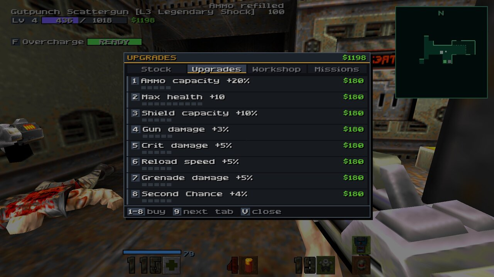
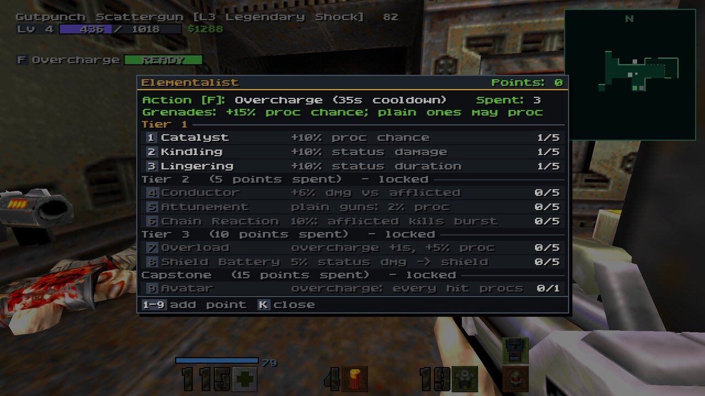
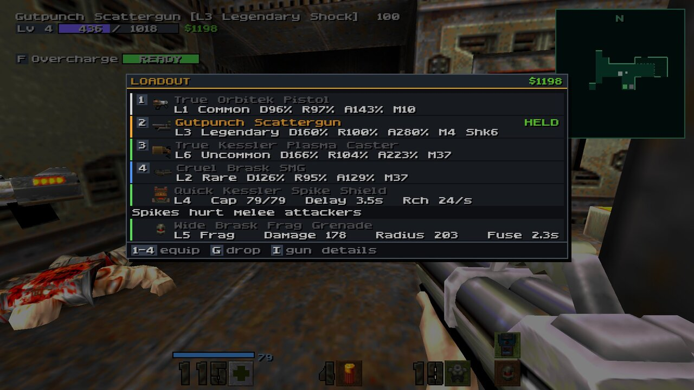
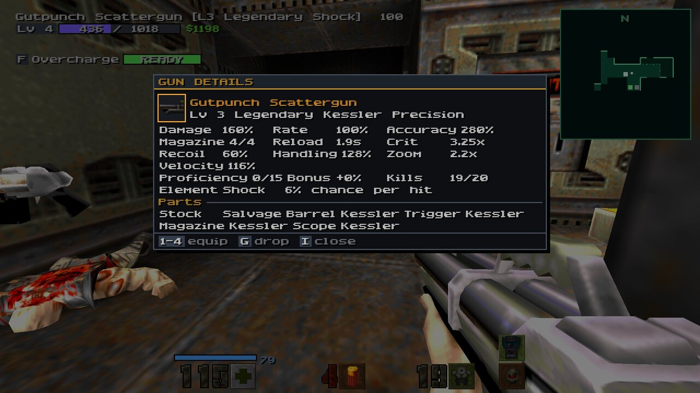
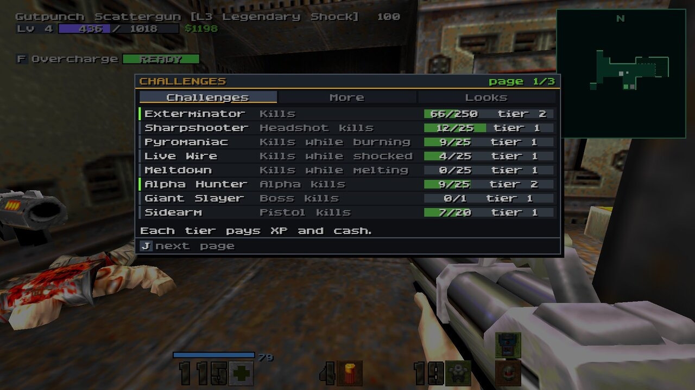
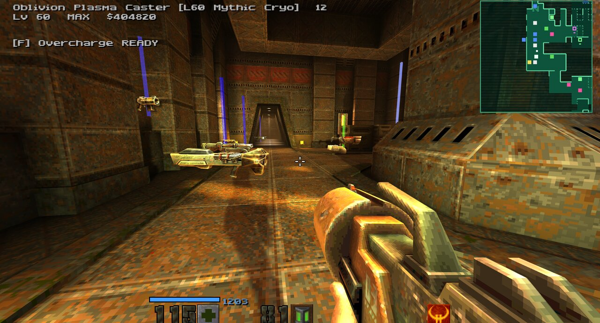
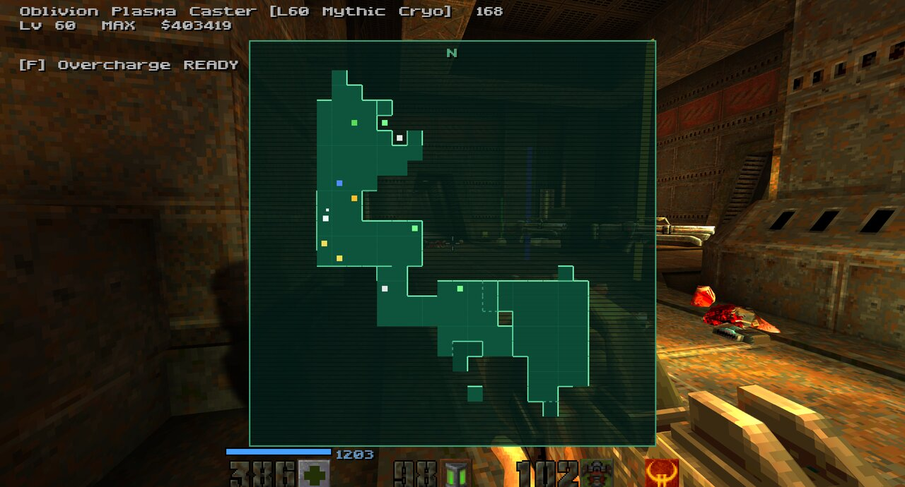
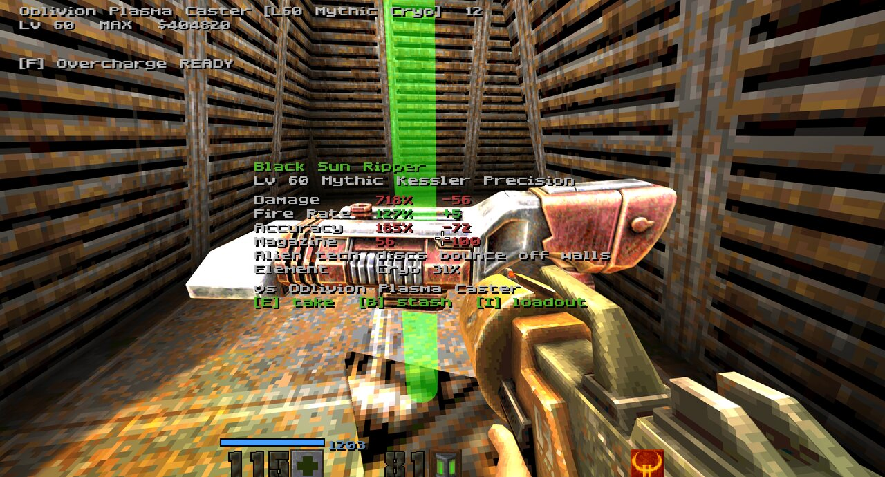
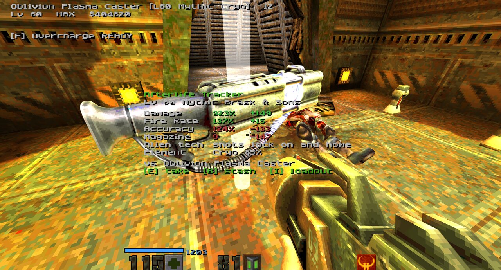
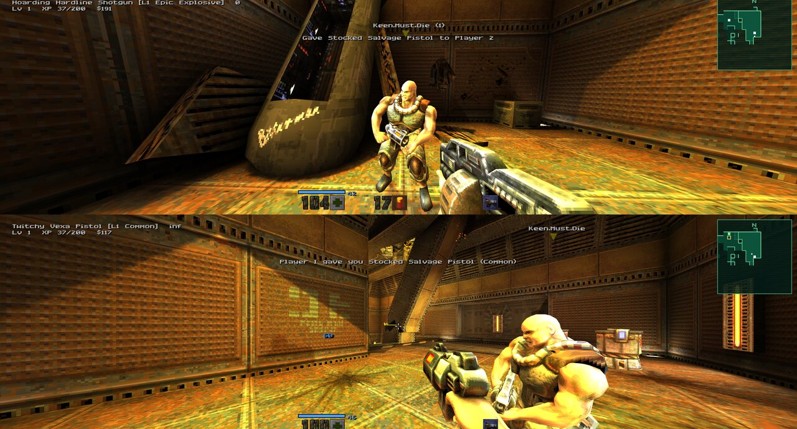
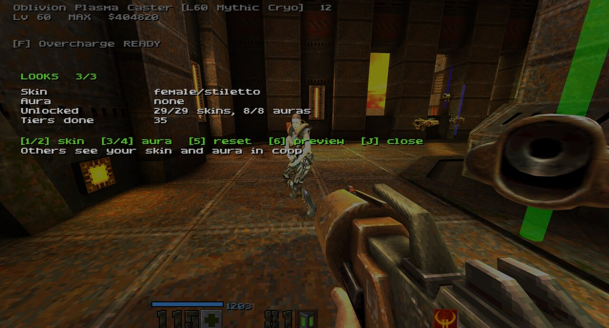
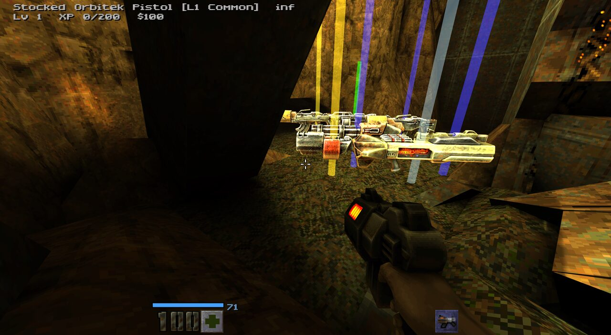
Needs Quake II (the 2023 rerelease by Nightdive and id Software) on Steam.
rerelease folder. In Steam, right-click Quake II → Manage → Browse local files, then open rerelease.q2rpg folder sits next to baseq2.+set game q2rpgtutorial for a short map that walks you through everything.Uninstall: delete the q2rpg folder and clear the launch option. Your normal Quake II saves are untouched.
Default keys. Rebind them like any other key; screens show the keys you pick.
The full guide, options and troubleshooting are in the README.
This is an alpha, and player feedback shapes where it goes next. Got an idea for a new gun, skill, monster twist or map modifier? Think something is too strong, too weak, or just not fun?
Q2ARPG works with custom maps and campaigns: put your .bsp files in q2rpg/maps/ and loot, XP, elites, challenges and map modifiers apply automatically. Mappers can tag Alphas, Omegas and bosses, place loot, tune each map and end a campaign into New Game+. Guns, makers, rarities and prices live in a data file. The zip ships a TrenchBroom config and an example map.
To the teams at id Software and Nightdive Studios: thank you. Quake II has given us decades of memories, and the rerelease and its game source kept the door open for modders. None of this would exist without your hard work. This mod is dedicated to you.